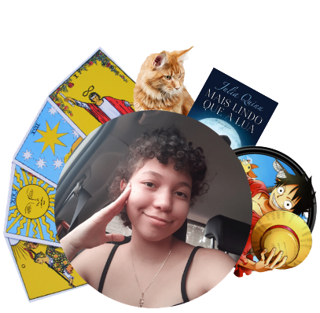

Layanne Esteves Honorato
Sobre Mim
Meu nome é Layanne Esteves Honorato, tenho 18 anos e sou natural do Pará. Em 2020 eu saí do interior do Mato Grosso para cursar Ciências e Tecnologia, na UFRN, em Natal-RN. Meu anseio de conhecer mais sobre as áreas que a tecnologia abrange foi tão grande que eu não pude esperar por uma oportunidade mais perto. Meu objetivo após o curso de C&T é Engenharia Biomédica, mas quero aproveitar todas as chances que eu tiver para desenvolver minhas habilidades em diversas áreas.
Curiosidades:
- Minha série de livros preferida é O Guia Do Mochileiro Das Galáxias;
- Gosto de estudar Tarot;
- Passo meu tempo livre vendo animes;
- Gosto de ler e escrever poemas;
- Meu primeiro contato com programação foi em 2020.
Escolha uma das opções e descubra mais sobre meus hobbies e interesses!


ProSEmpre - EJECT © 2021.1